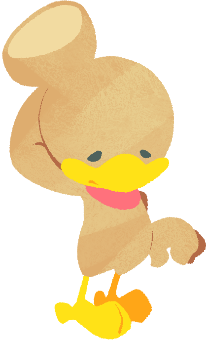

Pokorin (Male)He is one of Kururin's younger brothers. He is fairly small, a bit dopey, and has a large lump on his head from falling over a lot. Strangely, it appears he doesn't feel too much pain from it, but his clumsiness remains. Perhaps he could use some crutches... |
 |